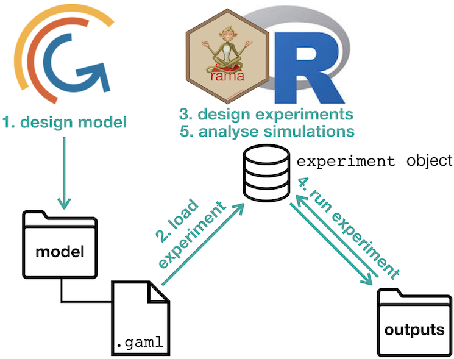
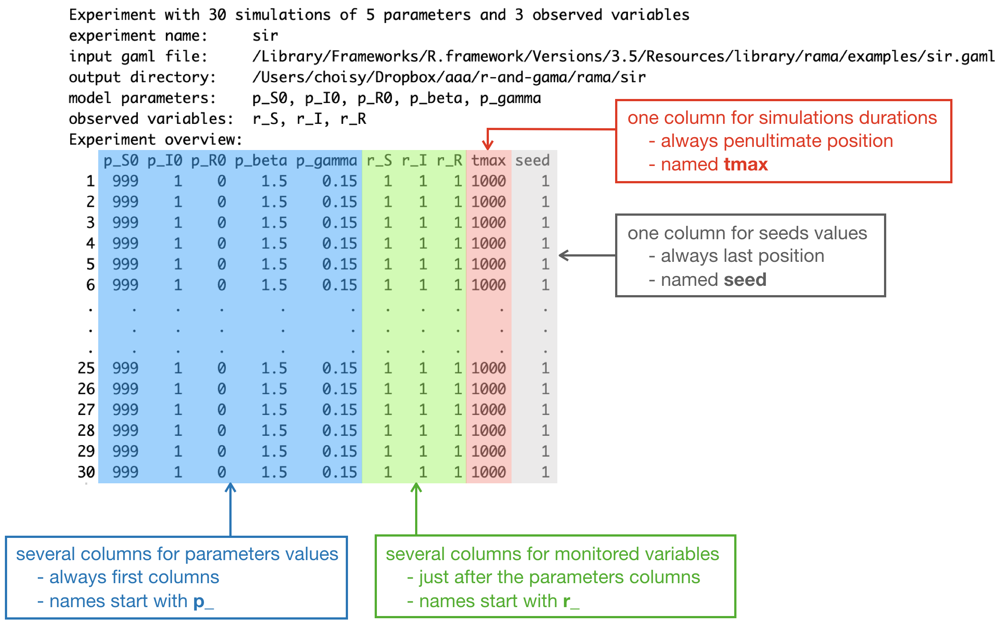

gamar is an R interface to the GAMA agent-based simulation platform. It allows to
-
read an experiment of a model defined in a
.gamlfile, - manipulate this experiment, including generate experiment plans and
- run the simulations defined in an experiment plan.
An experiment is a group of simulations. A simulation is an execution of a given model with
- a given set of parameters values,
- a given set of observed variables,
- a duration of simulation and
- a seed value.
All the simulations of an experiment relate to the same model. In R, an experiment belongs to the class experiment that is an extension of the class data.frame. The creation and manipulation of experiments can thus efficiently be performed with the data.frame methods. The class experiment is also tidyverse-compliant, which allows its insertion into pipelines (or workflows). Outputs of experiment runs are in an object of class experiment too, with fields corresponding to the simulation outputs, typically data frames of time series of observed variables and / or links to snapshots that can subsequently be assembled into movies. The R environment allows to
- create experimental designs (for example with the expand.grid() function),
- statistically explore results of simulation (how the parameters values influence the dynamics of the variables),
- perform sensitivity analysis of model’s parameters (how much each parameter quantitatively influences the outputs),
- estimate parameters values (model calibration) if real data are available for the model’s state variables.
In addition to above-mentionned data frame, an object of class experiment contains a link to a .gaml file containing the GAML model (input) and a link to a folder containing the outputs of simulations. It is possible to change these links but potentially dangerous and not advised. The .gaml file can be visualized in R but is not supposed to be modified by the user in R. Instead, a safe practice is to develop the model in the GAMA software and to reserve the use of gamar to the design and exploitation of experiments’ simulations as outlined above.

Structure of experiments in gamar
The package gamar contains one unique class, experiment that contains all the information of an experiment in a GAML model. This class is a subclass of data.frame as outlined below:

Each row of an experiment object corresponds to a simulation of the experiment. The columns corresponds to four type of data:
- one column per parameter (whose names start with
p_), - one column per monitored variable (whose names start with
r_), - one column for the duration of the simulation (in number of time step),
- one column for the seed value of the simulation.
The name of the experiment, the links to input .gaml file and output directory, as well as the names of paramters and monitored variables that are common to all the simulations of the experiment are stored in the attributes of the experiment object and can be handled with accessor functions.
Installation and configuration
The package is still on development for Windows, it will be available soon.
You can install gamar from GitHub with:
installed_packages <- row.names(installed.packages())
if (! "devtools" %in% installed_packages) install.packages("devtools")
if (! "gamar" %in% installed_packages) devtools::install_github("r-and-gama/gamar")After loading, gamar needs to be configured, a step that basically consists in linking gamar to a GAMA engine on the system. If GAMA is not installed on the system it will download and install it for you:
and follow instructions. Otherwise, you can input your local path to the application Gama Platform, in this case the function will not be interactive and will configure GAMA path for gamar: